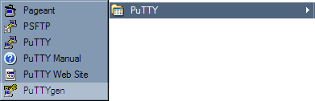
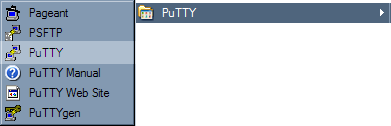
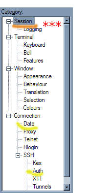
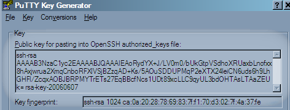

Subversion Setup on Windows
Install the SVN Client
Download the client from the Subversion website. The file you want will be whatever the most recent .exe file is.
Install it when you have finished downloading it.
Install the Tortoise Client
TortoiseSVN is an explorer extension for working with Subversion. You can think of it as the "Subversion GUI".
Download it from the Sourceforge site. You will want one of the .msi files.
Check to make sure you are installing either the 64-bit version, labeled "x64", or the 32-bit version, as appropriate.
Reboot when you are finished installing.
Install SSH Client
This document will describe the procedure for setting up with PuTTY. However, SVN, as well as Tortoise, can be used with Cygwin SSH. The assumption is that if you have Cygwin SSH already and prefer it, you will be able to follow the Unix instructions to set it up.
Download and run the PuTTY installer to get started.
Create a New PuTTY Private Key
With PuTTY installed, you will have a PuTTY menu under your Start menu. Start by opening PuTTYgen, and:
- Click Generate
- Move your mouse around in the blank space until the progress bar fills completely.
- Click "Save Private Key". The default location should be your User Profile directory (aka your HOME directory on Windows.) Save it there, with the name putty.ppk. If it asks you to confirm saving with no password, click OK.
- Leave the puttygen window open. You will need it in a later step.
Create a New PuTTY Session
Now launch PuTTY from the Start menu.
In the "PuTTY Configuration" window that opens:
- Type in "zoobody.com" as Host Name.
- Type in "zoobody.com" under Saved Sessions. This name is important, make sure to type in exactly "zoobody.com".
- Click "Save" and see that your new zoobody.com session shows up in the list under Saved Sessions.
Set the Session to Use Your Private Key
- In the tree on the left, click Connction > Data. Fill in your zoobody.com shell account name for "Auto-login username".
- In the tree on the left, go down further to Connection > SSH > Auth.
- "Browse..." for your "Private key file for authentication." Select the putty.ppk which you created earlier.
- Go back up to Session in the tree on the left, and click Save again. It is easy to forget to do this.
Open zoobody.com . . .
1. With your zoobody.com session still there, click Open. You should get a prompt asking for your password. Type in your password.
You should now have a shell prompt. Type the following:
mkdir .ssh chmod 700 .ssh cat >> .ssh/authorized_keys
The shell will now be waiting for you to type something. . .
. . . and Paste Your Public Key
3. Now, bring your PuTTYgen window back up. Select all the text in the area labeled "Public key for pasting into ...", and copy it to the clipboard with Control+C.
4. Go back to the PuTTY shell window. Right-click, which will paste your clipboard. Press Control+D to save it.
- Type: chmod 600 .ssh/authorized_keys
You can now close the PuTTYgen window that you had open from before. You can also close the PuTTY shell window.
Test That You Can Login With No Password
Open PuTTY from the Start menu once again.
Double-click the zoobody.com session.
You should get a shell prompt immediately, without it asking for your password.
Test TortoiseSVN
You have now successfully configured PuTTY, so give yourself a pat on the back, and test it:
Right click on the Desktop, and select "SVN Checkout..." We will check out your sandbox. Assuming your username is "somedeveloper", do the following:
- In the field at the top, type in svn+ssh://zoobody.com/zoobody/sandbox/somedeveloper
2. Add "\somedeveloper" to the end of the second field so it reads C:\...\Desktop\somedeveloper.
Click OK, and say OK when it asks if you want a new directory. If it tells you what revision you checked out, Subversion is installed and configured correctly.
Appendix: Using Cygwin SSH with Tortoise
If you prefer Cygwin SSH, but you also want to use TortoiseSVN, you can:
- Right click on the Desktop
- TortoiseSVN menu > Settings
- Click Network in the tree on the left
- "Browse..." for the ssh executable, which will be C:\cygwin\bin\ssh.exe, and click OK.
Like PuTTY, Cygwin SSH should be configured to use a public/private key so you won't get prompted for passwords every time you use Subversion.
Tada
You are finished.